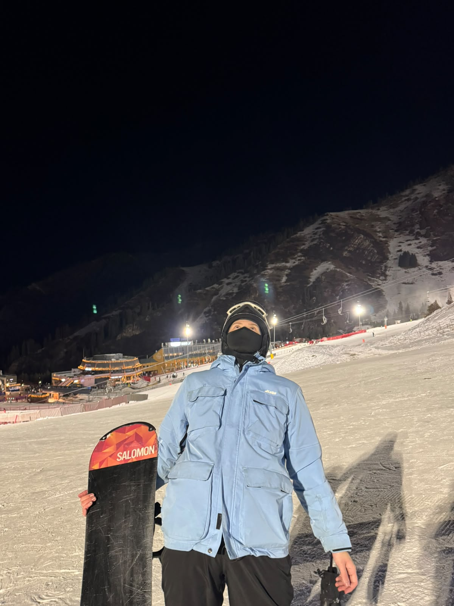
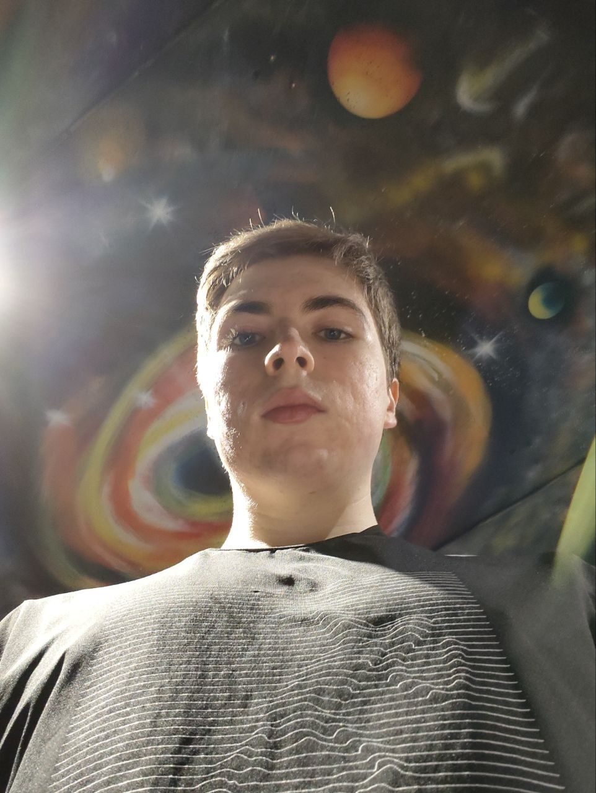
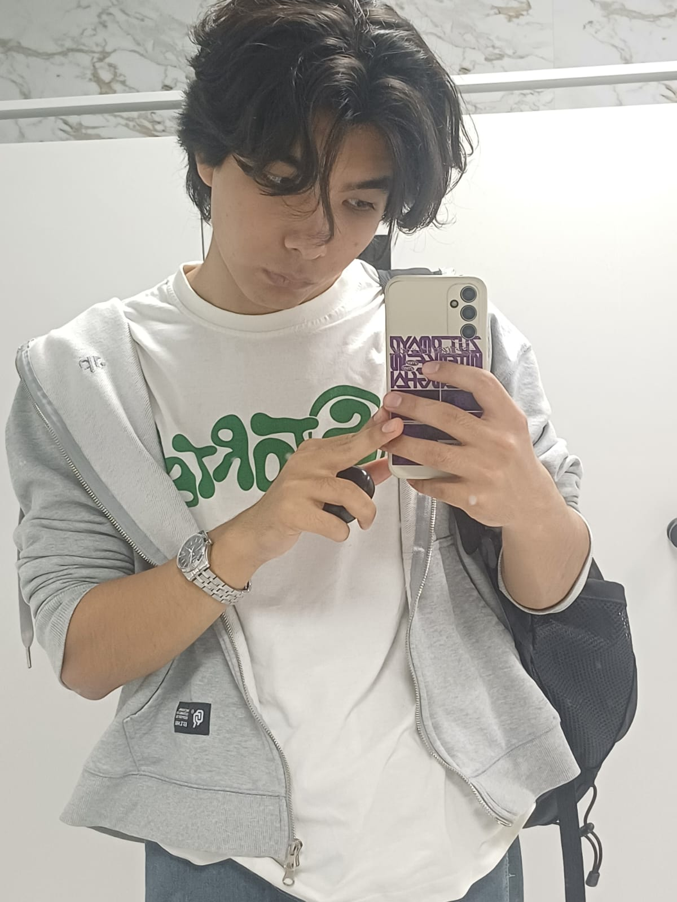

Наша команда

Кирилл Team Lead
Никита Backend Лаура
Frontend
Лаура
Frontend

Илияс FrontendКирилл
Роль: Team Lead
Описание, навыки, контакты
Я являюсь CEO нашей компании и совмещаю управленческую роль с непосредственным участием в разработке. Обладаю сильными навыками работы с Java и Spring, что позволяет мне не только принимать стратегические решения, но и лично отвечать за техническую реализацию продукта.
Backend-разработка
Занимаюсь backend-разработкой нашего проекта: проектирую архитектуру приложения, разрабатываю REST API, пишу серверную бизнес-логику и провожу код-ревью в команде. Слежу за качеством кода, производительностью и масштабируемостью системы.
Управленческая роль
Как руководитель компании, отвечаю за стратегическое планирование развития продукта, взаимодействие с заказчиками и партнёрами, а также за координацию работы команды разработки и соблюдение сроков проекта.
Ключевые навыки
Java, Spring Boot, Spring MVC, Spring Data JPA, Spring Security, REST API, проектирование микросервисной архитектуры, PostgreSQL/MySQL, Git, Docker, управление командой, код-ревью, стратегическое планирование.
Обязанности в проекте: техническая часть
- Разработка серверной части приложения на Java/Spring
- Проектирование и поддержка REST API
- Принятие архитектурных и технических решений
Обязанности в проекте: управление и координация
- Постановка задач и контроль код-ревью в команде
- Взаимодействие с заказчиками и партнёрами
- Контроль сроков и качества реализации проекта
Личные качества
Лидерство, ответственность, стратегическое мышление, внимание к деталям, умение работать в команде.
Контакты
📞 Телефон: +7 776 283 1945
✉️ Email: fri.solar8213@gmail.com
Засименко Никита
Роль: Backend
Навыки: основы Go
Контакты
Телефон: 8 800 53 55 55
Почта: example@gmail.com
О себе
Родился в городе Степногорске, окончил там 11 классов в городской школе.

После чего переехал в Астану и поступил в AIU.
На прошлых курсах разрабатывал сайты, дело с вёрсткой имел ещё в школе (у меня была строгая учительница).
Этим летом проходил практику в Astana Hub в геймдев студии.
Хочу в будущем уйти в Backend, изучить Go, C#, Python. А в далёком будущем в Fullstack на Html, Css, Js.
Нугуманова Лаура
Frontend-разработчик
Описание, навыки, контакты
Я являюсь Frontend-разработчиком нашей компании и отвечаю за создание пользовательской части веб-приложения. Занимаюсь разработкой удобного, современного и понятного интерфейса, работаю над внешним видом страниц и обеспечиваю корректное взаимодействие пользователя с системой.
Frontend-разработка
Занимаюсь frontend-разработкой нашего проекта: создаю структуру веб-страниц с помощью HTML, занимаюсь их оформлением с использованием CSS и реализую интерактивные элементы с помощью JavaScript. Следую требованиям проекта и стараюсь сделать интерфейс удобным и понятным для пользователей.
Пользовательский интерфейс
Отвечаю за разработку и улучшение пользовательского интерфейса. Работаю над расположением элементов страницы, навигацией, кнопками, формами и другими интерактивными компонентами. Уделяю внимание удобству использования, визуальному оформлению и адаптивности интерфейса.
Работа в команде
В процессе разработки взаимодействую с другими участниками команды, учитываю требования к проекту и согласовываю frontend-часть с общей структурой приложения. Принимаю участие в обсуждении задач, исправлении ошибок и улучшении уже реализованного функционала.
Ключевые навыки
HTML, CSS, JavaScript, разработка пользовательских интерфейсов, создание адаптивных веб-страниц, работа с формами и интерактивными элементами, базовая работа с Git, исправление ошибок, оптимизация и улучшение frontend-кода, внимание к деталям и командная работа.
Обязанности в проекте: техническая часть
- Разработка клиентской части веб-приложения
- Создание структуры страниц с использованием HTML
- Стилизация и оформление страниц с помощью CSS
- Добавление интерактивности с помощью JavaScript
- Создание удобной навигации и пользовательских элементов
- Исправление ошибок и улучшение существующего кода
- Обеспечение корректного отображения страниц на разных устройствах
Обязанности в проекте: дизайн и удобство использования
- Разработка понятного и удобного пользовательского интерфейса
- Работа над визуальным оформлением веб-страниц
- Размещение элементов интерфейса с учётом удобства пользователя
- Создание адаптивного дизайна для различных размеров экрана
- Улучшение внешнего вида и удобства использования приложения
Обязанности в проекте: работа в команде
- Взаимодействие с другими разработчиками проекта
- Обсуждение и выполнение поставленных задач
- Участие в тестировании frontend-части приложения
- Поиск и исправление ошибок
- Участие в улучшении и развитии проекта
Личные качества
Ответственность, внимательность, креативность, коммуникабельность, умение работать в команде, стремление к развитию, аккуратность в работе с кодом и внимание к пользовательскому опыту.
Контакты
📞 Phone: +7 700 000 00 00
✉️ E-mail: example@gmail.com
Булатханов Илияс
Роль: Frontend Developer
Описание, навыки, контакты
Я отвечаю за клиентскую часть нашего проекта, проектирую удобный интерфейс и обеспечиваю плавную работу пользовательской логики. Увлекаюсь современными веб-технологиями и качественной вёрсткой.
Студент компьютерных наук в Астане, активно развиваюсь в сфере веб-разработки, пишу код на JavaScript, изучаю продвинутые UI-решения и забочусь о том, чтобы интерфейс выглядел современно и работал без нареканий.
Ключевые навыки
JavaScript (ES6+), HTML5, CSS3, Flexbox, Grid, Git, адаптивная и кроссбраузерная вёрстка, работа с DOM, базовый UI/UX дизайн.
Обязанности в проекте
- Разработка интерактивных компонентов интерфейса
- Связка клиентской части с бэкендом через REST API
- Адаптация верстки под мобильные устройства и разные экраны
- Поддержание чистоты кода и стилистики проекта
Контакты
📞 Телефон: +7 776 283 1945
✉️ Email: iliyasv06@gmail.com
Task 1: работа с DOM
Создание/изменение/удаление элемента и Добавление его в конец "body". смотрите вывод в слева. Ниже — изменяемый абзац.
DOM demo
Task 2: управление классами
Ниже — блок, на который можно кликнуть дважды, чтобы изменить его класс(active, passive)
Task 3: Таблица
Task 4: Настройки темы
Здесь вы можете переключить цветовую схему сайта.